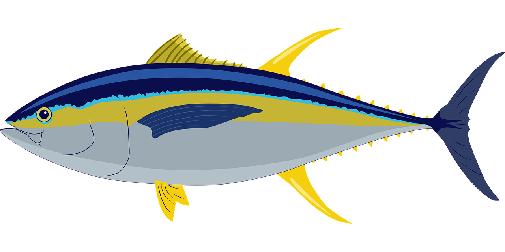

<div class="ot-card-container">
  <div class="ot-card ot-card-blue-dark ot-hover-card">
    <svg class="ot-material-icons" xmlns="http://www.w3.org/2000/svg" width="24" height="24" viewBox="0 0 24 24"><path d="M5 13.18v4L12 21l7-3.82v-4L12 17l-7-3.82zM12 3L1 9l11 6 9-4.91V17h2V9L12 3z"/></svg>

    <span>Learn Angular</span>

    <svg class="ot-material-icons" xmlns="http://www.w3.org/2000/svg" width="24" height="24" viewBox="0 0 24 24"><path d="M10 6L8.59 7.41 13.17 12l-4.58 4.59L10 18l6-6z"/></svg>
  </div>

  <div class="ot-card ot-card-middle-blue ot-hover-card">
    
  </div>

  <div class="ot-card ot-card-yelow ot-hover-card">
    
  </div>

  <ot-tile-tint></ot-tile-tint>
  <button class="ot-card ot-card-double ot-card-double-image" (click)="openTunaGame()">
    <video width="600" height="350" autoplay loop controls>
      <source src="/assets/promo-2.mp4" type="video/mp4">
    </video>
  </button>
</div>

<div class="ot-card-container">
  <div class="ot-card ot-card-middle-blue ot-hover-card">

  </div>

  <div class="ot-card ot-card-yelow ot-hover-card">

  </div>
  <div class="ot-card ot-card-orange ot-hover-card">

  </div>
</div>

